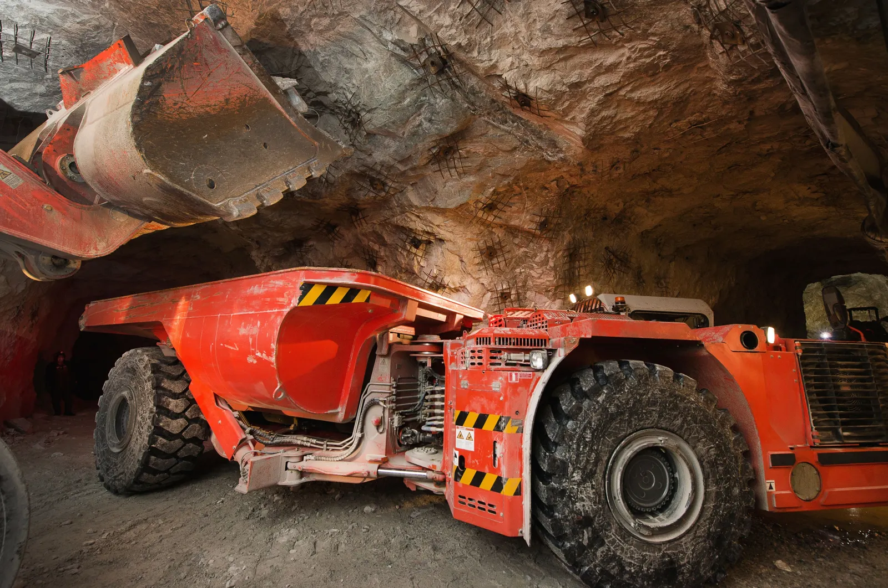

OUR MISSION
Maximise mining equipment availability and performance through dependable parts, technical expertise and reliable service.
Tyrotec (Pty) Ltd provides customised aftermarket support solutions for the mining industry. We understand the importance of dependable equipment in demanding operating environments, where the availability and performance of critical assets can influence daily productivity.
Our work centres on supplying high-quality spare parts, applying technical expertise and delivering reliable support. Through these services, we aim to help mining operators maintain equipment performance and make informed maintenance decisions.
Our offering includes hydraulic pumps, motors and valves, electrical components, wear parts, component repairs and equipment rebuilds. We also offer consignment and other commercial arrangements to meet different operational and supply needs.
Beyond parts supply, we provide engineered and operational solutions designed to strengthen maintenance strategies, support lifecycle management and reduce total cost of ownership. Data analytics is part of our approach to understanding spare parts consumption and improving asset planning.
With strategic partnerships involving global manufacturers and a stringent quality assurance process, our focus is on components that meet original performance specifications. We work to be more than a supplier: a dependable partner in mining productivity.

Maximise mining equipment availability and performance through dependable parts, technical expertise and reliable service.
A stringent quality assurance approach focused on components that meet original performance specifications.
Partnerships with global manufacturers that support engineered solutions for critical mining assets.
Our solutions connect component availability with maintenance and equipment lifecycle needs.
Access to a comprehensive range of maintenance spares sourced through reputable local and global suppliers, including hydraulic, electrical and wear components.
Component repairs and equipment rebuilds intended to help extend the service life of critical assets and support equipment availability.
Operational solutions, including data analytics for spare parts consumption and lifecycle management, to inform maintenance and supply decisions.
Keeping mining equipment operational requires more than access to replacement parts. Tyrotec combines parts supply, technical support, component repair and operational insight to help businesses manage demanding equipment requirements. Our commitment is to support equipment availability, improve maintenance outcomes and help critical mining assets perform at their peak.
Whether the requirement involves sourcing a component, arranging a rebuild or reviewing spare parts consumption, we focus on practical support aligned with the needs of the operation.
CONTACT OUR TEAM